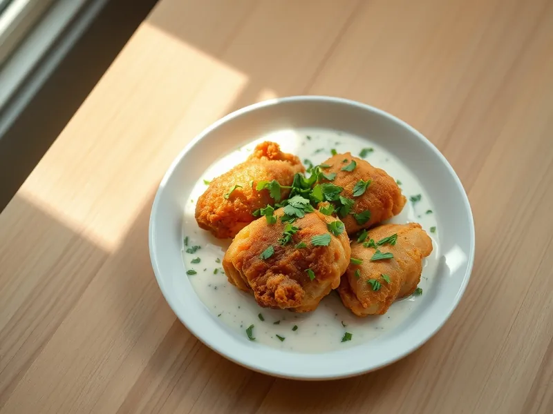

Фото: Иллюстрация ИИ, Cloudflare Workers AI
Чкмерули - курица в сливочно-чесночном соусе по-грузински
Обжаренные куриные бёдра в густом соусе из сливок и большого количества чеснока
30 мин3 порц.631 ккал на порциюБ 44 · Ж 48 · У 5Кавказская кухня
Открыть в приложении: порции, таймеры, список покупок
Продукты на 3 порц.
- Куриные бёдра6 шт
- Чеснок5 зуб.
- Сливки 20%200 мл
- Сливочное масло20 г
- Соль1 ч. л.
- Перец чёрный молотый2 щеп.
- Кинза по желаниюпо вкусу
Как готовить
- Снимите мясо бёдер с кости, кожу оставьте. Посолите и поперчите. Чеснок мелко порубите или раздавите. Это 5 минут.
- Растопите сливочное масло на среднем огне, выложите бёдра кожей вниз и жарьте 10 минут до хрустящей золотистой корочки.
- Переверните и жарьте ещё 5 минут.
- Добавьте чеснок вокруг мяса, прогрейте 1 минуту. Влейте сливки, посолите соус.
- Тушите без крышки на слабом огне 5-6 минут, пока соус не загустеет. Готово, когда мясо мягкое, сок на проколе прозрачный. Посыпьте кинзой.
Совет. Чеснока много - так и задумано, в соусе он становится мягким и сладковатым. Подавайте в той же сковороде с хлебом или лепёшкой.